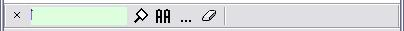

Password Safe allows you to search for entries with a given text. This is useful if you don't recall the name of an entry, but have a good idea regarding the contents, e.g., the entry with "Mary" in the Notes.
To search an open Safe, press Ctrl-F (or Edit->Find...). A toolbar appears above the status bar at the bottom of the application's windows similar to the following:

The simplest way to use this is to just enter the text you're looking for, and then press Enter or click on the magnifying glass icon to the right of the text field. The number of matching entries (if any) will be displayed in the right side of the toolbar, and the first matching entry will be selected and emphasized. Pressing Enter (or clicking on the magnifying glass) repeatedly will move to the next matching entry. When all entries have been selected, Password Safe will cycle back to the first.
The F3 key performs the repeat find. Just keep pressing F3 to cycle to the next entry that satisfies your criteria. Holding the Shift key down when pressing F3, finds the previous entry in the database matching your criteria rather than the next. You can also hold down the Shift key when clicking on the magnifying glass icon to find the previous match.